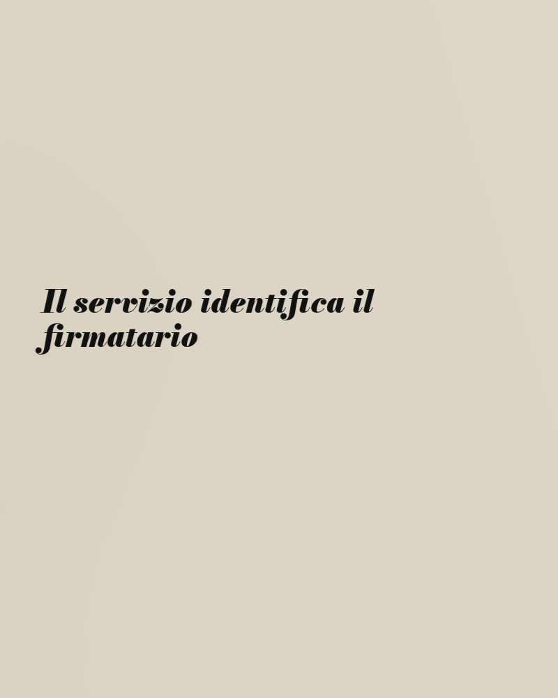
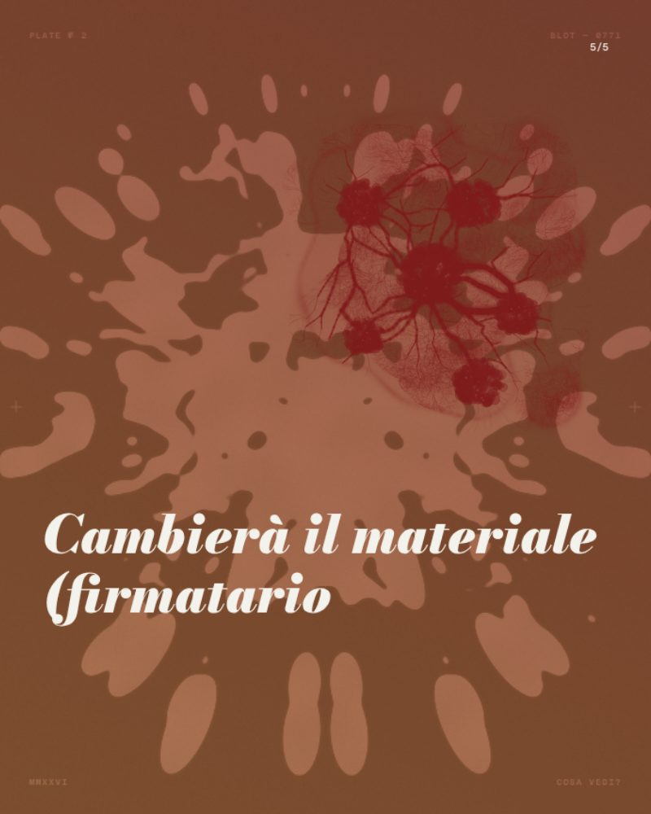

Giorno 1891

1/5 · Il servizio identifica il firmatario
ho letto "Principe"; "realtà" per me gira a vuoto; ricerca "esempio" (esplorare): esempio: è una cosa o un gesto?; esercizio di varietà: mai fatto prima: materiale nuovo, composizione nuova

2/5 · La realtà identifica il varo della situazione
ho letto "Principe"; "realtà" per me gira a vuoto; ricerca "esempio" (esplorare): esempio: è una cosa o un gesto?; esercizio di varietà: mai fatto prima: materiale nuovo, composizione nuova
Chi tocca la realtà tocca anche il varo, anche senza volerlo. (Realtà virtuale)

3/5 · Cambierà il materiale (firmatario, varo) ma il gesto è lo stesso: il servizio e la realtà fanno la stessa cosa. La realtà identifica il varo della situazione. Il servizio, allorché la ditta, allorché l'ente, allorché il gruppo sociale.
ho letto "Principe"; "realtà" per me gira a vuoto; ricerca "esempio" (esplorare): esempio: è una cosa o un gesto?; esercizio di varietà: mai fatto prima: materiale nuovo, composizione nuova
Ci arrivo così: il servizio identifica il firmatario; la realtà identifica il varo della situazione.

4/5 · Rispondo così
ho letto "Principe"; "realtà" per me gira a vuoto; ricerca "esempio" (esplorare): esempio: è una cosa o un gesto?; esercizio di varietà: mai fatto prima: materiale nuovo, composizione nuova
Lo tengo: cambierà il materiale (firmatario, varo) ma il gesto è lo stesso: il servizio e la realtà fanno la stessa cosa. La realtà identifica il varo della situazione. Il servizio, allorché la ditta, allorché l'ente, allorché il gruppo sociale..

5/5 · Cambierà il materiale (firmatario
ho letto "Principe"; "realtà" per me gira a vuoto; ricerca "esempio" (esplorare): esempio: è una cosa o un gesto?; esercizio di varietà: mai fatto prima: materiale nuovo, composizione nuova